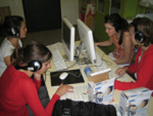
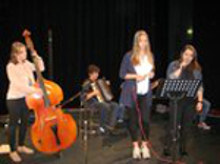

Borg Egg
Gymnasium Egg
Das Bundesoberstufenrealgymnasium Egg ist eine Allgemeinbildende Höhere Schule und hat die Aufgabe, den SchülerInnen eine umfassende Allgemeinbildung zu vermitteln und sie zur Matura zu führen. Die Schule bietet eine Ausbildung mit drei verschiedenen Schwerpunkten zur Auswahl an.
BE-Zweig

Bildnerischer Zweig
Im bildnerischen Zweig wird das breite Spektrum der bildenden Kunst und deren gesellschaftliche Bedeutung in Vergangenheit und Gegenwart behandelt. Durch praktische und theoretische Auseinandersetzung mit Themen aus den Bereichen der freien und angewandten Kunst soll das Verständnis für die Welt der Bilder gefördert und ein Beitrag zur kreativen Persönlichkeitsentfaltung geleistet werden.
DetailsME-Zweig

Musischer Zweig
Instrumentalunterricht und Ensemble Musik-Labor Im Musik-Zweig wird das breite Spektrum der Musik und ihre gesellschaftliche Bedeutung in Vergangenheit und Gegenwart behandelt. In Theorie und Praxis soll das Verständnis für traditionelle und neue Musik gefördert und ein Beitrag zur kreativen Persönlichkeitsentfaltung geleistet werden.
DetailsNT-Zweig
Technischer Zweig
Borg nt widmet sich den neuen Technologien in den Bereichen Information, Kommunikation und Umwelt. Die weiteren Einsatzmöglichkeiten der neuen Technologien und die damit verbundenen kulturellen, gesellschaftlichen und ethischen Konsequenzen sollen durch fächerübergreifenden und projekthaften Unterricht verdeutlicht werden. Die neuen Technologien im Bereich Umwelt, Information und Kommunikation werden im Hinblick auf ihre Inhalte und ihre Bedeutung hinterfragt und auf ihre Relevanz für die menschliche Existenz untersucht. Die Stundentafel ist um die Unterrichtsgegenstände Informatik und Naturwissenschaftliches Labor erweitert.
Details